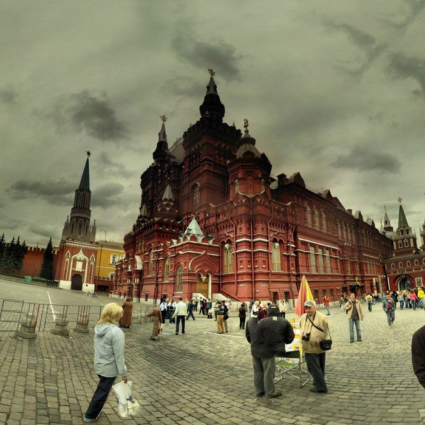

Каждому пятому россиянину стыдно за свою страну
Каждому пятому россиянину стыдно за свою страну
Опрос проведен российским Левада-Центром 24 – 27 октября 2014 года.
ГОРДИТЕСЬ ЛИ ВЫ ТЕМ, ЧТО ЖИВЕТЕ В РОССИИ?
сен.96 | мар.06 | окт.07 | окт.08 | апр.10 | окт.13 | окт.14 | определенно да | 37 | 48 | 54 | 40 | 44 | 28 | 37 | скорее да | 31 | 35 | 32 | 43 | 40 | 42 | 49 | скорее нет | 12 | 9 | 8 | 9 | 9 | 17 | 5 | определенно нет | 14 | 4 | 3 | 3 | 2 | 5 | 2 | затрудняюсь ответить | 6 | 4 | 3 | 5 | 6 | 8 | 8 | ЧУВСТВУЕТЕ ЛИ ВЫ СЕБЯ В НАШЕМ ОБЩЕСТВЕ СВОБОДНЫМ ЧЕЛОВЕКОМ?
июн. | май. | фев. | фев. | авг. | окт. | окт. | окт. | окт. | определенно да | 24 | 18 | 21 | 17 | 20 | 28 | 19 | 13 | 23 | скорее да | 19 | 24 | 32 | 36 | 33 | 30 | 39 | 39 | 46 | скорее нет | 20 | 28 | 22 | 26 | 26 | 23 | 25 | 30 | 19 | определенно нет | 25 | 19 | 18 | 15 | 18 | 15 | 9 | 9 | 3 | затрудняюсь ответить | 12 | 10 | 6 | 6 | 3 | 5 | 9 | 9 | 8 | ГОРДИТЕСЬ ЛИ ВЫ НЫНЕШНЕЙ РОССИЕЙ?
мар.06 | окт.07 | окт.08 | апр.10 | окт.13 | окт.14 | определенно да | 19 | 27 | 22 | 18 | 13 | 22 | скорее да | 29 | 33 | 40 | 37 | 40 | 47 | скорее нет | 32 | 23 | 23 | 27 | 30 | 13 | определенно нет | 16 | 12 | 6 | 7 | 10 | 5 | затрудняюсь ответить | 5 | 6 | 9 | 11 | 7 | 12 | КАК ВЫ СЧИТАЕТЕ, ОКАЗЫВАЕТЕ ЛИ ВЫ ЛИЧНО КАКОЕ-ЛИБО ВЛИЯНИЕ НА ПОЛИТИЧЕСКУЮ И ЭКОНОМИЧЕСКУЮ ЖИЗНЬ РОССИИ?
авг.06 | окт.07 | окт.11 | окт.13 | окт.14 | определенно да | 1 | 4 | 5 | 3 | 6 | скорее да | 9 | 11 | 12 | 14 | 16 | скорее нет | 31 | 32 | 32 | 38 | 34 | определенно нет | 56 | 48 | 46 | 40 | 33 | затрудняюсь ответить | 3 | 4 | 6 | 5 | 11 | В КАКОЙ МЕРЕ ВЫ СОГЛАСНЫ ИЛИ НЕ СОГЛАСНЫ С ВЫСКАЗЫВАНИЕМ: «ДЛЯ МЕНЯ ЛУЧШЕ БЫТЬ ГРАЖДАНИНОМ РОССИИ, ЧЕМ ЛЮБОЙ ДРУГОЙ СТРАНЫ МИРА»?
июн.96 | окт.12 | окт.14 | полностью согласен | 42 | 32 | 38 | скорее, согласен | 28 | 38 | 40 | ни согласен, ни не согласен | 12 | 19 | 15 | скорее, не согласен | 8 | 6 | 4 | совершенно не согласен | 2 | 2 | 1 | затрудняюсь ответить | 7 | 4 | 4 | В КАКОЙ МЕРЕ ВЫ СОГЛАСНЫ ИЛИ НЕ СОГЛАСНЫ С ВЫСКАЗЫВАНИЕМ: «В РОССИИ ПРОИСХОДИТ СЕЙЧАС ТАКИЕ ДЕЛА, ЧТО ЗАСТАВЛЯЕТ МЕНЯ ИСПЫТЫВАТЬ СТЫД ЗА НЕЕ»?
июн.96 | июл.03 | окт.12 | окт.14 | полностью согласен | 41 | 41 | 16 | 5 | скорее, согласен | 40 | 39 | 36 | 15 | ни согласен, ни не согласен | 7 | 10 | 26 | 23 | совершенно не согласен | 3 | 2 | 5 | 24 | затрудняюсь ответить | 6 | 5 | 4 | 5 | В КАКОЙ МЕРЕ ВЫ СОГЛАСНЫ ИЛИ НЕ СОГЛАСНЫ С ВЫСКАЗЫВАНИЕМ: «ГОВОРЯ В ЦЕЛОМ, РОССИЯ ЛУЧШЕ БОЛЬШИНСТВА ДРУГИХ СТРАН»?
июн.96 | июл.03 | окт.12 | окт.14 | полностью согласен | 18 | 18 | 16 | 25 | скорее, согласен | 18 | 26 | 32 | 39 | ни согласен, ни не согласен | 23 | 23 | 27 | 21 | скорее, не согласен | 17 | 17 | 14 | 8 | совершенно не согласен | 8 | 6 | 3 | 2 | затрудняюсь ответить | 15 | 10 | 7 | 4 | В КАКОЙ МЕРЕ ВЫ СОГЛАСНЫ ИЛИ НЕ СОГЛАСНЫ С ВЫСКАЗЫВАНИЕМ: «ЛЮДИ ДОЛЖНЫ ПОДДЕРЖИВАТЬ СВОЮ СТРАНУ, ДАЖЕ ЕСЛИ ОНА НЕ ПРАВА»?
июн.96 | июл.03 | окт.12 | окт.14 | полностью согласен | 27 | 24 | 20 | 17 | скорее, согласен | 28 | 28 | 33 | 33 | ни согласен, ни не согласен | 15 | 17 | 24 | 28 | скорее, не согласен | 11 | 15 | 12 | 13 | совершенно не согласен | 8 | 8 | 4 | 3 | затрудняюсь ответить | 11 | 7 | 7 | 7 | В КАКОЙ МЕРЕ ВЫ СОГЛАСНЫ ИЛИ НЕ СОГЛАСНЫ С ВЫСКАЗЫВАНИЕМ: «МИР СТАЛ БЫ ЛУЧШЕ, ЕСЛИ БЫ РОССИЯНЕ ПРИЗНАЛИ НЕДОСТАТКИ РОССИИ»?
полностью согласен | 15 | 7 | скорее, согласен | 29 | 17 | ни согласен, ни не согласен | 30 | 25 | скорее, не согласен | 9 | 23 | совершенно не согласен | 3 | 15 | затрудняюсь ответить | 14 | 13 | КАК ВЫ СЧИТАЕТЕ, КАК ИЗМЕНИЛОСЬ ОТНОШЕНИЕ К РОССИИ И РУССКИМ ЗА РУБЕЖОМ ЗА ПОСЛЕДНИЕ ПОЛГОДА?
затрудняюсь ответить | 15 | Источник: Левада-Центр.
Posted On: 2014-11-21T21:00:00

Content Date: 2014-11-21
Download Date: 2021-07-16
Document ID: L0C04FIWR